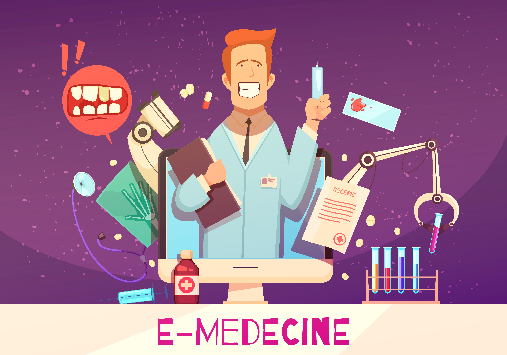

A LITTLE INTRODUCTION TO
E-Commerce, E-Governance
& E-Medicine

In recent years, the healthcare industry has undergone a significant transformation with the advent of digital technologies. E-Medicine, or Electronic Medicine, encompasses a range of digital health solutions that leverage technology to improve patient care, enhance access to medical services, and streamline healthcare delivery processes. From telemedicine consultations to remote patient monitoring, e-medicine offers innovative approaches to diagnosis, treatment, and healthcare management, revolutionizing the traditional practices of medicine.
Evolution of E-Medicine:
E-medicine has undergone a remarkable evolution, transforming the way healthcare services are delivered and accessed. Initially starting with basic online consultations and medical advice forums, it has now burgeoned into a comprehensive ecosystem encompassing various technologies and services. From telemedicine to remote patient monitoring, e-medicine has enabled patients to receive timely care regardless of geographical barriers. The evolution has been marked by advancements in digital platforms, data analytics, artificial intelligence (AI), and regulatory frameworks, all aimed at enhancing healthcare accessibility, efficiency, and quality.
Telemedicine and Telehealth Services:
Telemedicine and telehealth services have revolutionized healthcare delivery by enabling remote consultations and diagnosis through digital communication technologies. Patients can now connect with healthcare providers in real-time, facilitating timely interventions and reducing the need for in-person visits, especially in non-emergency situations. With the integration of video conferencing, secure messaging, and electronic health records, telemedicine offers a convenient and efficient way to address a wide range of medical concerns while expanding access to healthcare in underserved areas.
Digital Health Platforms and Apps:
Digital health platforms and mobile applications have become integral components of e-medicine, offering a myriad of functionalities to both patients and healthcare professionals. These platforms provide features such as appointment scheduling, medication management, health tracking, and teleconsultations, all accessible from smartphones or computers. With user-friendly interfaces and personalized experiences, digital health apps empower individuals to take charge of their health and engage in proactive self-care while facilitating seamless communication and collaboration between patients and providers.
Artificial Intelligence and Data Analytics in Healthcare:
Artificial intelligence (AI) and data analytics are revolutionizing healthcare by harnessing vast amounts of medical data to improve diagnostics, treatment planning, and patient outcomes. AI algorithms can analyze medical images, interpret clinical data, and predict disease progression with unprecedented accuracy, aiding clinicians in making informed decisions. Moreover, data analytics tools enable healthcare organizations to identify trends, optimize workflows, and personalize patient care, leading to more efficient healthcare delivery and resource allocation.
Remote Patient Monitoring and Wearable Devices:
Remote patient monitoring (RPM) combined with wearable devices allows for continuous tracking of vital signs, activity levels, and other health metrics outside traditional healthcare settings. These devices, ranging from smartwatches to wearable sensors, enable real-time data collection and transmission to healthcare providers, facilitating early detection of health issues and proactive interventions. RPM enhances patient autonomy and enables personalized care plans tailored to individual needs, ultimately improving health outcomes and reducing healthcare costs.
E-Pharmacy and Telepharmacy Services:
E-pharmacy and telepharmacy services have transformed the way medications are dispensed and managed, offering convenient access to prescription drugs and pharmaceutical care through online platforms and telecommunication technologies. Patients can order medications, receive counseling from pharmacists, and access medication adherence support remotely, eliminating barriers such as transportation and time constraints. Additionally, telepharmacy enables pharmacists to provide clinical services and medication therapy management to underserved communities, ensuring equitable access to pharmaceutical care.
Blockchain Technology in Healthcare:
Blockchain technology holds promise for enhancing data security, interoperability, and transparency in healthcare systems. By creating tamper-proof, decentralized ledgers of health information, blockchain facilitates secure sharing of medical records, streamlines administrative processes, and mitigates data breaches. Moreover, blockchain-enabled smart contracts can automate healthcare transactions, such as insurance claims processing and supply chain management, reducing administrative costs and minimizing errors. Despite challenges related to scalability and regulatory compliance, blockchain has the potential to revolutionize healthcare operations and improve patient outcomes.
Regulatory Framework and Compliance:
The regulatory landscape surrounding e-medicine is continuously evolving to ensure patient safety, privacy, and quality of care. Regulatory bodies worldwide are establishing guidelines and standards for telemedicine practices, data security, and interoperability of digital health solutions. Compliance with regulations such as HIPAA in the United States and GDPR in the European Union is essential for e-health providers to safeguard patient information and maintain trust. As technology advances and new challenges emerge, regulatory frameworks must adapt to foster innovation while upholding ethical and legal standards in e-medicine.
Patient Education and Engagement:
E-medicine plays a crucial role in patient education and engagement, empowering individuals to actively participate in their healthcare journey and make informed decisions about their well-being. Digital health platforms offer educational resources, interactive tools, and personalized health content to help patients understand their conditions, treatment options, and preventive measures. Moreover, telemedicine consultations facilitate open communication between patients and providers, enabling collaborative care planning and shared decision-making. By promoting health literacy and fostering patient-provider partnerships, e-medicine enhances health outcomes and promotes overall wellness.
Global Perspectives and Case Studies:
E-medicine has had a significant impact on healthcare delivery worldwide, with numerous case studies highlighting its efficacy in diverse settings and populations. From rural communities lacking access to specialist care to urban centers grappling with healthcare disparities, e-medicine has proven to be a valuable tool for expanding access to quality healthcare services. Case studies from countries like India, Australia, and Brazil demonstrate the effectiveness of telemedicine in improving health outcomes, reducing healthcare costs, and addressing geographical barriers. As e-medicine continues to evolve, global collaboration and knowledge sharing will be essential for maximizing its potential and ensuring equitable healthcare access for all.